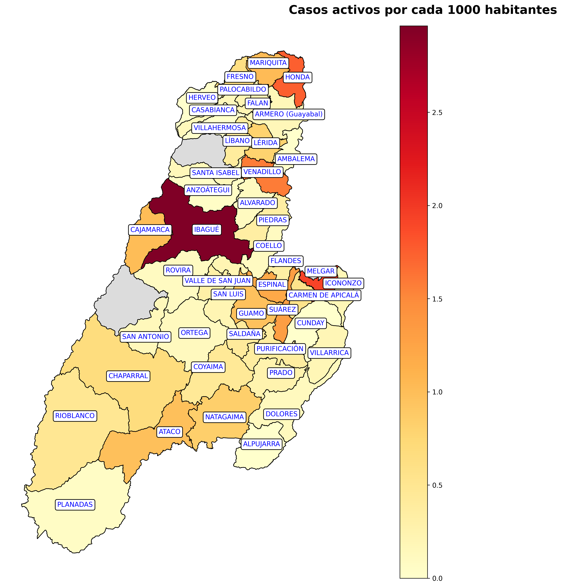

|
|
En la siguiente imágen se observa el mapa de los casos de “pacientes activos” de COVID-19 para el departamento del Tolima.
¿Cómo interpretar el mapa?
1. Los municipios en color GRIS, son municipios NO COVID; los municipios en tono AMARILLO tienen casos activos; y los municipios en ROJO reportan los más alton indices de casos activos.
2. En la parte superior derecha se encuentra una barra de colores que indica el intervalo de casos correspondiente a cada municipio (cuanto más rojo más cantidad de casos).
|
|  |
|
|
La siguiente tabla contiene el detalle de los casos COVID por municipio:
RECUPERADOS:
Individuos que en una prueba posterior realizada obtienen un resultado negativo ante un proceso anterior que afirmaba positivo para contagio de COVID-19.
EN CASA:
Pacientes activos, positivos para COVID-19 con síntomas leves que tienen un recuperación con atención “en casa”.
HOSPITAL:
Pacientes activos, positivos para COVID-19 con síntomas moderados que se recuperación con atención en el hospital.
HOSPITAL UCI:
Pacientes activos, positivos para COVID-19 con síntomas moderados y/o graves que se encuentran internados en la Unidad de Cuidados Intensivos UCI.
FALLECIDOS:
TOTAL:
Cantidad de casos confirmados por municipio (TOTAL MUNICIPIO) | Cantidad de casos por atención en el Tolima (TOTAL TOLIMA).
|
 |
Sistema de respuesta al COVID-19 desarrollado por el Laboratorio de Sistemas de Información Geográfica y el Semillero de Investigación en Robótica SIRUI de la Universidad de Ibagué.
BoletínBOT
Es un software de notificación automático desarrollado en Python que periodicamente revisa la información de las bases de datos del Instituto Nacional de Salud INS y la Our World in Data para generar un reporte y enviarlo a los usuarios inscritos.
|
|
Contáctanos:
Semillero de investigación en Robótica
sirui@unibague.edu.co / www.haroldmurcia.com
Suscribete a nuestro boletín
Laboratorio de Sistemas de Información Geográfica
sergio.balaguera@unibague.edu.co
Visita nuestro Dashboard
|
|